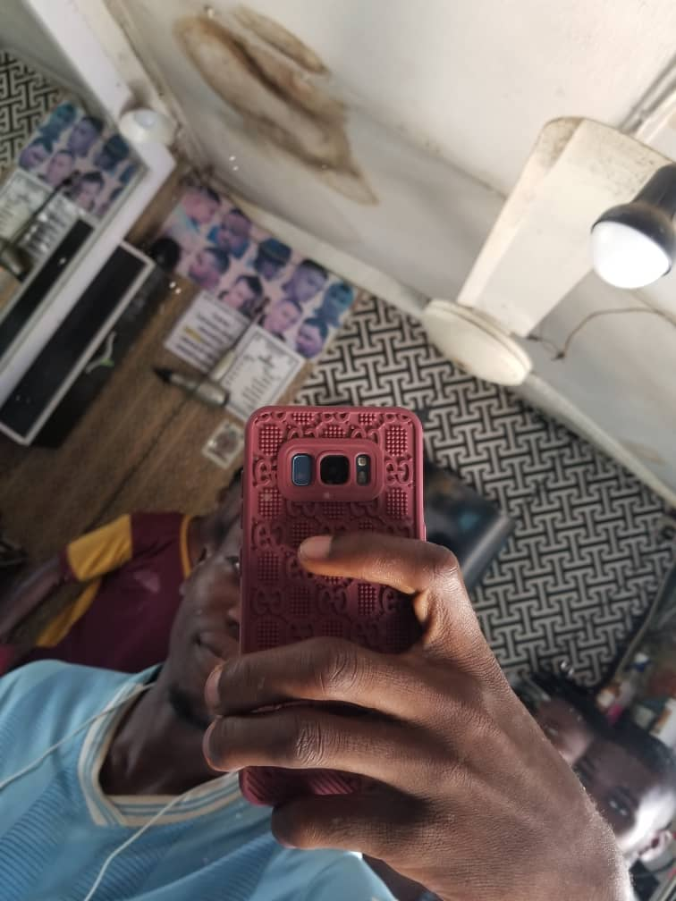

Name: Amos Samuel
Gender: Male
Email Address: amossambrightsamuel123@gmail.com
Phone Number: 09157818089
Address: No. 2 Ita Akure street, taiwo Ilorin, Kwara State
Occupation: Student
Marital Status: Single
Nationality: Nigeria
Hobby: Football
About Amos Samuel
Amos Samuel is a driven and ambitious student from Lokoja, born in the year 2000. With a passion for
technology that knows no bounds, Amos is currently pursuing his studies while exploring his interests in web
development. His fascination with the digital world began at a young age, and he has been nurturing his
skills in coding and web design ever since.
Achievements and Interests
Amos has a proven track record of success, having won major inter-school competitions in both SSS2 and SSS3.
These achievements are a testament to his hard work, dedication, and natural aptitude for problem-solving.
When he's not studying or learning new tech skills, Amos enjoys playing football, watching movies, and
listening to music. His love for football is not just about the game; it's about the teamwork, strategy, and
camaraderie that comes with it. Similarly, his passion for movies and music is driven by his desire to
explore different cultures, perspectives, and creative expressions.
Goal and Aspiration
Amos' ultimate goal is to become an expert in web development and make a name for himself in the tech
industry. He's determined to achieve this goal through hard work and dedication, inspired by his personal
motto: "Nothing changes until something changes." Amos believes that setting a goal, chasing it, and making
it a reality is the key to success. He's committed to learning new skills, attending workshops and
conferences, and networking with other professionals in the field to stay ahead of the curve.
What's Next for Amos?
As Amos continues to pursue his studies and develop his skills in web development, he's excited to see where
his passion takes him. With his winning spirit and determination to succeed, Amos is poised to make a
lasting impact in the tech world. He's considering furthering his education with a degree in Computer
Science or a related field, and he's open to exploring different career paths, from software engineering to
data analysis.
Personal Growth and Development
Amos is committed to personal growth and development, recognizing that success is not just about achieving
goals but also about becoming a better version of himself. He's focused on building strong relationships,
staying curious, and embracing new challenges. Amos believes that failure is an opportunity to learn and
grow, and he's not afraid to take calculated risks to pursue his dreams.
Conclusion
In conclusion, Amos Samuel is a talented and driven individual with a passion for technology and a desire to
make a lasting impact in the world. With his strong work ethic, determination, and commitment to personal
growth, Amos is poised to achieve great things. Whether he's coding, playing football, or exploring new
interests, Amos is always striving to be the best version of himself.
1: Proficiency in HTML, CSS, and JavaScript: Be able to write clean, semantic, and well-structured
code in these three core technologies.
2: Understanding of responsive web design: Know how to create websites that adapt to different screen
sizes and devices.
3: Knowledge of front-end build tools: Be familiar with tools like Webpack, Git, or Github, and
understand how to use them to automate tasks and optimize code.
4: Build a personal portfolio website: Create a website that showcases my skills and experience as a
front-end developer.
5: Complete a series of coding projects: Build a set of projects that demonstrate my proficiency in
different areas of front-end development, such as a to-do list app or an e commerce website.
6: Contribute to open-source projects: Find an open-source project on GitHub or another platform and
contribute to it to gain experience working with others.
7: Get hired as a junior front-end developer: Use the skills and knowledge I gained from the course
to land a job as a junior front-end developer.
8: Build a professional network: Connect with other developers and industry professionals on LinkedIn
or other platforms.
9: Stay up-to-date with industry trends: Continuously learn and stay current with the latest
developments in front-end web development.